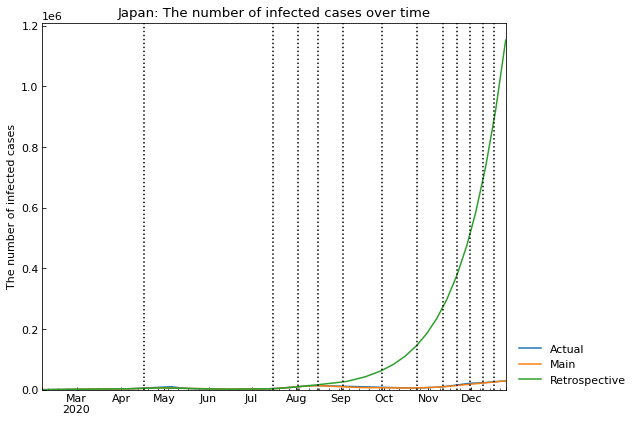

Usage (quick version)¶
Preparation¶
[1]:
# Standard users
# !pip install covsirphy
# Developers (Note: this notebook is in example directory)
import os
os.chdir("../")
[2]:
import warnings
[3]:
import covsirphy as cs
cs.__version__
[3]:
'2.8.3-alpha.new.224'
Dataset preparation¶
Download the datasets to “input” direcotry and load them.
If “input” directory has the datasets, DataLoader will load the local files. If the datasets were updated in remote servers, DataLoader will update the local files automatically. Download the datasets to “input” direcotry and load them.
If “input” directory has the datasets, DataLoader will load the local files. If the datasets were updated in remote servers, DataLoader will update the local files automatically.
[4]:
data_loader = cs.DataLoader("input")
# The number of cases (JHU style)
jhu_data = data_loader.jhu(verbose=True)
# Population in each country
population_data = data_loader.population(verbose=True)
# Government Response Tracker (OxCGRT)
oxcgrt_data = data_loader.oxcgrt(verbose=True)
Retrieving datasets from COVID-19 Data Hub: https://covid19datahub.io/
Detailed citaition list:
Open Government Data, United Kingdom (2020), https://coronavirus.data.gov.uk
Department of Disease Control of Thailand (2020), https://covid19.th-stat.com/
World Health Organization (2020), https://covid19.who.int
Ireland Health Protection Surveillance Centre (HPSC) and Health Service Executive (HSE) (2020), https://covid19ireland-geohive.hub.arcgis.com/
The COVID Tracking Project (2020), https://covidtracking.com
Ministry of Health of Croatia (2020), https://data.gov.hr/dataset/koronavirus/resource/08fab529-ebba-46c7-be79-05782ddb02ef
Open Government Data, Latvia (2020), https://data.gov.lv/dati/dataset
Taiwan Ministry of Health and Welfare (2020), https://data.gov.tw/dataset/120451
Wikipedia (2020), https://en.wikipedia.org/wiki
Epistat, Belgian Infectious Diseases (2020), https://epistat.sciensano.be
Johns Hopkins Center for Systems Science and Engineering (2020), https://github.com/CSSEGISandData/COVID-19
Covid19data.com.au (2020), https://github.com/M3IT/COVID-19_Data
Data Science for Social Impact research group, University of Pretoria (2020), https://github.com/dsfsi/covid19za
Data on the COVID-19 pandemic in Portugal (2020), https://github.com/dssg-pt/covid19pt-data
COVID-19_plus_Russia GitHub repository (2020), https://github.com/grwlf/COVID-19_plus_Russia
COVID-19 Peru Data Repository (2020), https://github.com/jmcastagnetto/covid-19-peru-data
Twitter Web Scraper for Polish Ministery of Health (2020), https://github.com/martinbenes1996/covid19poland
The New York Times (2020), https://github.com/nytimes/covid-19-data
Open Government Data, Liechtenstein (2020), https://github.com/openZH/covid_19
Open Government Data, Switzerland (2020), https://github.com/openZH/covid_19
OpenCOVID19 France (2020), https://github.com/opencovid19-fr/data
Our World in Data (2020), https://github.com/owid/covid-19-data
COVID-19 Turkey API (2020), https://github.com/ozanerturk/covid19-turkey-api
Ministero della Salute, Italia (2020), https://github.com/pcm-dpc/COVID-19
Japan COVID-19 Bulletin Board (2020), https://github.com/swsoyee/2019-ncov-japan
Public Health Infobase, Government of Canada (2020), https://health-infobase.canada.ca
Open Government Data, Austria (2020), https://info.gesundheitsministerium.at/
Robert Koch-Institut (2020), https://npgeo-corona-npgeo-de.hub.arcgis.com/datasets/dd4580c810204019a7b8eb3e0b329dd6_0
Ministery of Health of Czech Republic (2020), https://onemocneni-aktualne.mzcr.cz/covid-19
Public Health Agency, Sweden (2020), https://oppnadata.se/datamangd/#esc_entry=1424&esc_context=525
Ministry of Public Health and Population of Haiti (2020), https://proxy.hxlstandard.org/data/738954
Federal Office of Public Health FOPH (2020), https://www.bag.admin.ch/bag/en/home/krankheiten/ausbrueche-epidemien-pandemien/aktuelle-ausbrueche-epidemien/novel-cov/situation-schweiz-und-international.html
CIA - Central Intelligence Agency (2020), https://www.cia.gov/library/publications/the-world-factbook/geos/aq.html
COVID19-India API (2020), https://www.covid19india.org/
Ministerio de Salud y Protección Social de Colombia (2020), https://www.datos.gov.co
Ministery of Health, Slovenia (2020), https://www.gov.si/en/topics/coronavirus-disease-covid-19/
Ministerio de Ciencia, TecnologÃa, Conocimiento e Innovación (2020), https://www.minciencia.gob.cl/COVID19
Ministerio de Sanidad, Consumo y Bienestar Social (2020), https://www.mscbs.gob.es/
Canada's National Statistical Agency (2020), https://www150.statcan.gc.ca/t1/tbl1/en/tv.action?pid=1710000901
Oxford COVID-19 Government Response Tracker (2020), www.bsg.ox.ac.uk/covidtracker
Eurostat (2019), https://ec.europa.eu/eurostat
Geloky (2019), https://geloky.com/geocoding/place/Valka+Latvia
GADM (2019), https://public.opendatasoft.com/explore/dataset/landkreise-in-germany/table/
Statbel, Belgium in Figures (2019), https://statbel.fgov.be/en/themes/population/structure-population
Australian Bureau of Statistics (2019), https://www.abs.gov.au/AUSSTATS/abs@.nsf/DetailsPage/3101.0Sep%202019?OpenDocument
National Bureau of Statistics of China NBS (2018), http://data.stats.gov.cn/english/easyquery.htm?cn=E0103
World Bank Open Data (2018), https://data.worldbank.org/indicator/SP.POP.TOTL
Swiss Federal Statistical Office (2018), https://www.bfs.admin.ch/bfs/en/home/statistics/regional-statistics/regional-portraits-key-figures/cantons/data-explanations.html
Czech Statistical Office (2018), https://www.czso.cz/csu/czso/demograficka-rocenka-kraju-2009-az-2018
Istituto Nazionale di Statistica, Italia (2018), https://www.istat.it/en/population-and-households?data-and-indicators
Worldometer (2018), https://www.worldometers.info/world-population/channel-islands-population/
City populations worldwide (2016), http://population.city/taiwan/adm/
The number of cases (JHU style)¶
[5]:
# Description/citation
print(jhu_data.citation)
(Secondary source) Guidotti, E., Ardia, D., (2020), "COVID-19 Data Hub", Journal of Open Source Software 5(51):2376, doi: 10.21105/joss.02376.
We can get Citation list of primary sources with DataLoader(...).covid19dh_citation
[6]:
print(data_loader.covid19dh_citation)
Open Government Data, United Kingdom (2020), https://coronavirus.data.gov.uk
Department of Disease Control of Thailand (2020), https://covid19.th-stat.com/
World Health Organization (2020), https://covid19.who.int
Ireland Health Protection Surveillance Centre (HPSC) and Health Service Executive (HSE) (2020), https://covid19ireland-geohive.hub.arcgis.com/
The COVID Tracking Project (2020), https://covidtracking.com
Ministry of Health of Croatia (2020), https://data.gov.hr/dataset/koronavirus/resource/08fab529-ebba-46c7-be79-05782ddb02ef
Open Government Data, Latvia (2020), https://data.gov.lv/dati/dataset
Taiwan Ministry of Health and Welfare (2020), https://data.gov.tw/dataset/120451
Wikipedia (2020), https://en.wikipedia.org/wiki
Epistat, Belgian Infectious Diseases (2020), https://epistat.sciensano.be
Johns Hopkins Center for Systems Science and Engineering (2020), https://github.com/CSSEGISandData/COVID-19
Covid19data.com.au (2020), https://github.com/M3IT/COVID-19_Data
Data Science for Social Impact research group, University of Pretoria (2020), https://github.com/dsfsi/covid19za
Data on the COVID-19 pandemic in Portugal (2020), https://github.com/dssg-pt/covid19pt-data
COVID-19_plus_Russia GitHub repository (2020), https://github.com/grwlf/COVID-19_plus_Russia
COVID-19 Peru Data Repository (2020), https://github.com/jmcastagnetto/covid-19-peru-data
Twitter Web Scraper for Polish Ministery of Health (2020), https://github.com/martinbenes1996/covid19poland
The New York Times (2020), https://github.com/nytimes/covid-19-data
Open Government Data, Liechtenstein (2020), https://github.com/openZH/covid_19
Open Government Data, Switzerland (2020), https://github.com/openZH/covid_19
OpenCOVID19 France (2020), https://github.com/opencovid19-fr/data
Our World in Data (2020), https://github.com/owid/covid-19-data
COVID-19 Turkey API (2020), https://github.com/ozanerturk/covid19-turkey-api
Ministero della Salute, Italia (2020), https://github.com/pcm-dpc/COVID-19
Japan COVID-19 Bulletin Board (2020), https://github.com/swsoyee/2019-ncov-japan
Public Health Infobase, Government of Canada (2020), https://health-infobase.canada.ca
Open Government Data, Austria (2020), https://info.gesundheitsministerium.at/
Robert Koch-Institut (2020), https://npgeo-corona-npgeo-de.hub.arcgis.com/datasets/dd4580c810204019a7b8eb3e0b329dd6_0
Ministery of Health of Czech Republic (2020), https://onemocneni-aktualne.mzcr.cz/covid-19
Public Health Agency, Sweden (2020), https://oppnadata.se/datamangd/#esc_entry=1424&esc_context=525
Ministry of Public Health and Population of Haiti (2020), https://proxy.hxlstandard.org/data/738954
Federal Office of Public Health FOPH (2020), https://www.bag.admin.ch/bag/en/home/krankheiten/ausbrueche-epidemien-pandemien/aktuelle-ausbrueche-epidemien/novel-cov/situation-schweiz-und-international.html
CIA - Central Intelligence Agency (2020), https://www.cia.gov/library/publications/the-world-factbook/geos/aq.html
COVID19-India API (2020), https://www.covid19india.org/
Ministerio de Salud y Protección Social de Colombia (2020), https://www.datos.gov.co
Ministery of Health, Slovenia (2020), https://www.gov.si/en/topics/coronavirus-disease-covid-19/
Ministerio de Ciencia, TecnologÃa, Conocimiento e Innovación (2020), https://www.minciencia.gob.cl/COVID19
Ministerio de Sanidad, Consumo y Bienestar Social (2020), https://www.mscbs.gob.es/
Canada's National Statistical Agency (2020), https://www150.statcan.gc.ca/t1/tbl1/en/tv.action?pid=1710000901
Oxford COVID-19 Government Response Tracker (2020), www.bsg.ox.ac.uk/covidtracker
Eurostat (2019), https://ec.europa.eu/eurostat
Geloky (2019), https://geloky.com/geocoding/place/Valka+Latvia
GADM (2019), https://public.opendatasoft.com/explore/dataset/landkreise-in-germany/table/
Statbel, Belgium in Figures (2019), https://statbel.fgov.be/en/themes/population/structure-population
Australian Bureau of Statistics (2019), https://www.abs.gov.au/AUSSTATS/abs@.nsf/DetailsPage/3101.0Sep%202019?OpenDocument
National Bureau of Statistics of China NBS (2018), http://data.stats.gov.cn/english/easyquery.htm?cn=E0103
World Bank Open Data (2018), https://data.worldbank.org/indicator/SP.POP.TOTL
Swiss Federal Statistical Office (2018), https://www.bfs.admin.ch/bfs/en/home/statistics/regional-statistics/regional-portraits-key-figures/cantons/data-explanations.html
Czech Statistical Office (2018), https://www.czso.cz/csu/czso/demograficka-rocenka-kraju-2009-az-2018
Istituto Nazionale di Statistica, Italia (2018), https://www.istat.it/en/population-and-households?data-and-indicators
Worldometer (2018), https://www.worldometers.info/world-population/channel-islands-population/
City populations worldwide (2016), http://population.city/taiwan/adm/
[7]:
# Raw data
jhu_data.raw.tail()
[7]:
| ObservationDate | Confirmed | Recovered | Deaths | Population | ISO3 | Province/State | Country/Region | school_closing | workplace_closing | cancel_events | gatherings_restrictions | transport_closing | stay_home_restrictions | internal_movement_restrictions | international_movement_restrictions | information_campaigns | testing_policy | contact_tracing | stringency_index | |
|---|---|---|---|---|---|---|---|---|---|---|---|---|---|---|---|---|---|---|---|---|
| 280726 | 2020-10-08 | 14 | 14 | 0 | 107808.0 | COL | Vichada | Colombia | 3 | 1 | 2 | 3 | 1 | 0 | 0 | 4 | 2 | 2 | 2 | 62.04 |
| 280727 | 2020-10-09 | 14 | 14 | 0 | 107808.0 | COL | Vichada | Colombia | 3 | 1 | 2 | 3 | 1 | 0 | 0 | 4 | 2 | 2 | 2 | 62.04 |
| 280728 | 2020-10-10 | 14 | 14 | 0 | 107808.0 | COL | Vichada | Colombia | 3 | 1 | 2 | 3 | 1 | 0 | 0 | 4 | 2 | 2 | 2 | 62.04 |
| 280729 | 2020-10-11 | 14 | 14 | 0 | 107808.0 | COL | Vichada | Colombia | 3 | 1 | 2 | 3 | 1 | 0 | 0 | 4 | 2 | 2 | 2 | 62.04 |
| 280730 | 2020-10-12 | 14 | 14 | 0 | 107808.0 | COL | Vichada | Colombia | 3 | 1 | 2 | 3 | 1 | 0 | 0 | 4 | 2 | 2 | 2 | 62.04 |
[8]:
# Cleaned data
jhu_data.cleaned().tail()
[8]:
| Date | Country | Province | Confirmed | Infected | Fatal | Recovered | |
|---|---|---|---|---|---|---|---|
| 280726 | 2020-10-08 | Colombia | Vichada | 14 | 0 | 0 | 14 |
| 280727 | 2020-10-09 | Colombia | Vichada | 14 | 0 | 0 | 14 |
| 280728 | 2020-10-10 | Colombia | Vichada | 14 | 0 | 0 | 14 |
| 280729 | 2020-10-11 | Colombia | Vichada | 14 | 0 | 0 | 14 |
| 280730 | 2020-10-12 | Colombia | Vichada | 14 | 0 | 0 | 14 |
[9]:
# Subset for a country
jhu_data.subset("Japan", province="Tokyo").tail()
[9]:
| Date | Confirmed | Infected | Fatal | Recovered | |
|---|---|---|---|---|---|
| 203 | 2020-10-08 | 27117 | 2115 | 417 | 24585 |
| 204 | 2020-10-09 | 27320 | 2126 | 421 | 24773 |
| 205 | 2020-10-10 | 27569 | 2162 | 421 | 24986 |
| 206 | 2020-10-11 | 27715 | 2150 | 421 | 25144 |
| 207 | 2020-10-12 | 27793 | 2228 | 421 | 25144 |
[10]:
# Total
total_df = jhu_data.total()
total_df.tail()
[10]:
| Confirmed | Infected | Fatal | Recovered | Fatal per Confirmed | Recovered per Confirmed | Fatal per (Fatal or Recovered) | |
|---|---|---|---|---|---|---|---|
| Date | |||||||
| 2020-10-08 | 36148113 | 10017424 | 1054861 | 25075828 | 0.014591 | 0.346848 | 0.040369 |
| 2020-10-09 | 36499896 | 10162119 | 1060638 | 25277139 | 0.014529 | 0.346263 | 0.040271 |
| 2020-10-10 | 36808887 | 10280317 | 1064688 | 25463882 | 0.014462 | 0.345893 | 0.040134 |
| 2020-10-11 | 37104131 | 10364718 | 1069000 | 25670413 | 0.014405 | 0.345924 | 0.039978 |
| 2020-10-12 | 37104562 | 10446309 | 1069004 | 25589249 | 0.014405 | 0.344826 | 0.040100 |
[11]:
# Plot the total values
cs.line_plot(total_df[["Infected", "Fatal", "Recovered"]], "Total number of cases over time")

(Optional) Replace the dataset in Japan¶
[12]:
jhu_data.subset("Japan").tail()
[12]:
| Date | Confirmed | Infected | Fatal | Recovered | |
|---|---|---|---|---|---|
| 242 | 2020-10-08 | 87667 | 5837 | 1618 | 80212 |
| 243 | 2020-10-09 | 88268 | 5928 | 1624 | 80716 |
| 244 | 2020-10-10 | 88949 | 5996 | 1627 | 81326 |
| 245 | 2020-10-11 | 89386 | 5952 | 1629 | 81805 |
| 246 | 2020-10-12 | 89664 | 88031 | 1633 | 80725 |
[13]:
japan_data = data_loader.japan()
print(japan_data.citation)
Lisphilar (2020), COVID-19 dataset in Japan, GitHub repository, https://github.com/lisphilar/covid19-sir/data/japan
[14]:
jhu_data.replace(japan_data)
jhu_data.subset("Japan").tail()
[14]:
| Date | Confirmed | Infected | Fatal | Recovered | |
|---|---|---|---|---|---|
| 240 | 2020-10-08 | 87020 | 5180 | 1613 | 80227 |
| 241 | 2020-10-09 | 87639 | 5290 | 1616 | 80733 |
| 242 | 2020-10-10 | 88233 | 5253 | 1624 | 81356 |
| 243 | 2020-10-11 | 88912 | 5461 | 1627 | 81824 |
| 244 | 2020-10-12 | 89347 | 5605 | 1629 | 82113 |
Population in each country¶
[15]:
# Description/citation
print(population_data.citation)
(Secondary source) Guidotti, E., Ardia, D., (2020), "COVID-19 Data Hub", Journal of Open Source Software 5(51):2376, doi: 10.21105/joss.02376.
We can get Citation list of primary sources with DataLoader(...).covid19dh_citation
[16]:
# Raw data (the same as jhu_data)
population_data.raw.tail()
[16]:
| ObservationDate | Confirmed | Recovered | Deaths | Population | ISO3 | Province/State | Country/Region | school_closing | workplace_closing | cancel_events | gatherings_restrictions | transport_closing | stay_home_restrictions | internal_movement_restrictions | international_movement_restrictions | information_campaigns | testing_policy | contact_tracing | stringency_index | |
|---|---|---|---|---|---|---|---|---|---|---|---|---|---|---|---|---|---|---|---|---|
| 280726 | 2020-10-08 | 14 | 14 | 0 | 107808.0 | COL | Vichada | Colombia | 3 | 1 | 2 | 3 | 1 | 0 | 0 | 4 | 2 | 2 | 2 | 62.04 |
| 280727 | 2020-10-09 | 14 | 14 | 0 | 107808.0 | COL | Vichada | Colombia | 3 | 1 | 2 | 3 | 1 | 0 | 0 | 4 | 2 | 2 | 2 | 62.04 |
| 280728 | 2020-10-10 | 14 | 14 | 0 | 107808.0 | COL | Vichada | Colombia | 3 | 1 | 2 | 3 | 1 | 0 | 0 | 4 | 2 | 2 | 2 | 62.04 |
| 280729 | 2020-10-11 | 14 | 14 | 0 | 107808.0 | COL | Vichada | Colombia | 3 | 1 | 2 | 3 | 1 | 0 | 0 | 4 | 2 | 2 | 2 | 62.04 |
| 280730 | 2020-10-12 | 14 | 14 | 0 | 107808.0 | COL | Vichada | Colombia | 3 | 1 | 2 | 3 | 1 | 0 | 0 | 4 | 2 | 2 | 2 | 62.04 |
[17]:
# Cleaned data
population_data.cleaned().tail()
[17]:
| ISO3 | Country | Province | Date | Population | |
|---|---|---|---|---|---|
| 239751 | COL | Colombia | Vichada | 2020-10-08 | 107808 |
| 239752 | COL | Colombia | Vichada | 2020-10-09 | 107808 |
| 239753 | COL | Colombia | Vichada | 2020-10-10 | 107808 |
| 239754 | COL | Colombia | Vichada | 2020-10-11 | 107808 |
| 239755 | COL | Colombia | Vichada | 2020-10-12 | 107808 |
[18]:
population_data.value("Japan", province=None)
[18]:
126529100
[19]:
# Register population value of Tokyo in Japan
# https://www.metro.tokyo.lg.jp/tosei/hodohappyo/press/2020/06/11/07.html
population_data.update(14_002_973, "Japan", province="Tokyo")
population_data.value("Japan", province="Tokyo")
[19]:
14002973
Government Response Tracker (OxCGRT)¶
[20]:
# Description/citation
print(oxcgrt_data.citation)
(Secondary source) Guidotti, E., Ardia, D., (2020), "COVID-19 Data Hub", Journal of Open Source Software 5(51):2376, doi: 10.21105/joss.02376.
We can get Citation list of primary sources with DataLoader(...).covid19dh_citation
[21]:
# Raw data (the same as jhu_data)
oxcgrt_data.raw.tail()
[21]:
| ObservationDate | Confirmed | Recovered | Deaths | Population | ISO3 | Province/State | Country/Region | school_closing | workplace_closing | cancel_events | gatherings_restrictions | transport_closing | stay_home_restrictions | internal_movement_restrictions | international_movement_restrictions | information_campaigns | testing_policy | contact_tracing | stringency_index | |
|---|---|---|---|---|---|---|---|---|---|---|---|---|---|---|---|---|---|---|---|---|
| 280726 | 2020-10-08 | 14 | 14 | 0 | 107808.0 | COL | Vichada | Colombia | 3 | 1 | 2 | 3 | 1 | 0 | 0 | 4 | 2 | 2 | 2 | 62.04 |
| 280727 | 2020-10-09 | 14 | 14 | 0 | 107808.0 | COL | Vichada | Colombia | 3 | 1 | 2 | 3 | 1 | 0 | 0 | 4 | 2 | 2 | 2 | 62.04 |
| 280728 | 2020-10-10 | 14 | 14 | 0 | 107808.0 | COL | Vichada | Colombia | 3 | 1 | 2 | 3 | 1 | 0 | 0 | 4 | 2 | 2 | 2 | 62.04 |
| 280729 | 2020-10-11 | 14 | 14 | 0 | 107808.0 | COL | Vichada | Colombia | 3 | 1 | 2 | 3 | 1 | 0 | 0 | 4 | 2 | 2 | 2 | 62.04 |
| 280730 | 2020-10-12 | 14 | 14 | 0 | 107808.0 | COL | Vichada | Colombia | 3 | 1 | 2 | 3 | 1 | 0 | 0 | 4 | 2 | 2 | 2 | 62.04 |
[22]:
# Cleaned data
oxcgrt_data.cleaned().tail()
[22]:
| Date | Country | ISO3 | School_closing | Workplace_closing | Cancel_events | Gatherings_restrictions | Transport_closing | Stay_home_restrictions | Internal_movement_restrictions | International_movement_restrictions | Information_campaigns | Testing_policy | Contact_tracing | Stringency_index | |
|---|---|---|---|---|---|---|---|---|---|---|---|---|---|---|---|
| 280726 | 2020-10-08 | Colombia | COL | 3 | 1 | 2 | 3 | 1 | 0 | 0 | 4 | 2 | 2 | 2 | 62.04 |
| 280727 | 2020-10-09 | Colombia | COL | 3 | 1 | 2 | 3 | 1 | 0 | 0 | 4 | 2 | 2 | 2 | 62.04 |
| 280728 | 2020-10-10 | Colombia | COL | 3 | 1 | 2 | 3 | 1 | 0 | 0 | 4 | 2 | 2 | 2 | 62.04 |
| 280729 | 2020-10-11 | Colombia | COL | 3 | 1 | 2 | 3 | 1 | 0 | 0 | 4 | 2 | 2 | 2 | 62.04 |
| 280730 | 2020-10-12 | Colombia | COL | 3 | 1 | 2 | 3 | 1 | 0 | 0 | 4 | 2 | 2 | 2 | 62.04 |
[23]:
# Subset for a country
oxcgrt_data.subset("Japan").tail()
[23]:
| Date | School_closing | Workplace_closing | Cancel_events | Gatherings_restrictions | Transport_closing | Stay_home_restrictions | Internal_movement_restrictions | International_movement_restrictions | Information_campaigns | Testing_policy | Contact_tracing | Stringency_index | |
|---|---|---|---|---|---|---|---|---|---|---|---|---|---|
| 281 | 2020-10-08 | 1 | 1 | 1 | 0 | 0 | 1 | 1 | 1 | 2 | 2 | 1 | 31.48 |
| 282 | 2020-10-09 | 1 | 1 | 1 | 0 | 0 | 1 | 1 | 1 | 2 | 2 | 1 | 31.48 |
| 283 | 2020-10-10 | 1 | 1 | 1 | 0 | 0 | 1 | 1 | 1 | 2 | 2 | 1 | 31.48 |
| 284 | 2020-10-11 | 1 | 1 | 1 | 0 | 0 | 1 | 1 | 1 | 2 | 2 | 1 | 31.48 |
| 285 | 2020-10-12 | 1 | 1 | 1 | 0 | 0 | 1 | 1 | 1 | 2 | 2 | 1 | 31.48 |
[24]:
# Subset for a country (using ISO3 code)
oxcgrt_data.subset("JPN").tail()
[24]:
| Date | School_closing | Workplace_closing | Cancel_events | Gatherings_restrictions | Transport_closing | Stay_home_restrictions | Internal_movement_restrictions | International_movement_restrictions | Information_campaigns | Testing_policy | Contact_tracing | Stringency_index | |
|---|---|---|---|---|---|---|---|---|---|---|---|---|---|
| 281 | 2020-10-08 | 1 | 1 | 1 | 0 | 0 | 1 | 1 | 1 | 2 | 2 | 1 | 31.48 |
| 282 | 2020-10-09 | 1 | 1 | 1 | 0 | 0 | 1 | 1 | 1 | 2 | 2 | 1 | 31.48 |
| 283 | 2020-10-10 | 1 | 1 | 1 | 0 | 0 | 1 | 1 | 1 | 2 | 2 | 1 | 31.48 |
| 284 | 2020-10-11 | 1 | 1 | 1 | 0 | 0 | 1 | 1 | 1 | 2 | 2 | 1 | 31.48 |
| 285 | 2020-10-12 | 1 | 1 | 1 | 0 | 0 | 1 | 1 | 1 | 2 | 2 | 1 | 31.48 |
Scenario analysis¶
As an example, we will analysis the number of cases in Japan.
[25]:
scenario = cs.Scenario(jhu_data, population_data, country="Japan", province=None)
Check records¶
[26]:
import matplotlib
warnings.simplefilter("ignore", category=matplotlib.MatplotlibDeprecationWarning)
record_df = scenario.records()
record_df.tail()

[26]:
| Date | Confirmed | Infected | Fatal | Recovered | |
|---|---|---|---|---|---|
| 240 | 2020-10-08 | 87020 | 5180 | 1613 | 80227 |
| 241 | 2020-10-09 | 87639 | 5290 | 1616 | 80733 |
| 242 | 2020-10-10 | 88233 | 5253 | 1624 | 81356 |
| 243 | 2020-10-11 | 88912 | 5461 | 1627 | 81824 |
| 244 | 2020-10-12 | 89347 | 5605 | 1629 | 82113 |
S-R trend analysis¶
[27]:
scenario.trend(set_phases=True)
scenario.summary()

[27]:
| Type | Start | End | Population | |
|---|---|---|---|---|
| 0th | Past | 06Feb2020 | 21Apr2020 | 126529100 |
| 1st | Past | 22Apr2020 | 06Jul2020 | 126529100 |
| 2nd | Past | 07Jul2020 | 23Jul2020 | 126529100 |
| 3rd | Past | 24Jul2020 | 01Aug2020 | 126529100 |
| 4th | Past | 02Aug2020 | 14Aug2020 | 126529100 |
| 5th | Past | 15Aug2020 | 30Aug2020 | 126529100 |
| 6th | Past | 31Aug2020 | 11Sep2020 | 126529100 |
| 7th | Past | 12Sep2020 | 26Sep2020 | 126529100 |
| 8th | Past | 27Sep2020 | 12Oct2020 | 126529100 |
Hyperparameter estimation of ODE models¶
As an example, use SIR-F model. We can use SIR, SIRD, (SIRFV), (SEWIRF).
[28]:
scenario.estimate(cs.SIRF)
<SIR-F model: parameter estimation>
Running optimization with 4 CPUs...
8th phase (27Sep2020 - 12Oct2020): finished 383 trials in 0 min 20 sec
2nd phase (07Jul2020 - 23Jul2020): finished 664 trials in 0 min 35 sec
3rd phase (24Jul2020 - 01Aug2020): finished 1077 trials in 1 min 0 sec
1st phase (22Apr2020 - 06Jul2020): finished 1012 trials in 1 min 0 sec
0th phase (06Feb2020 - 21Apr2020): finished 962 trials in 1 min 0 sec
6th phase (31Aug2020 - 11Sep2020): finished 235 trials in 0 min 10 sec
7th phase (12Sep2020 - 26Sep2020): finished 230 trials in 0 min 10 sec
5th phase (15Aug2020 - 30Aug2020): finished 557 trials in 0 min 25 sec
4th phase (02Aug2020 - 14Aug2020): finished 1188 trials in 1 min 0 sec
Completed optimization. Total: 1 min 56 sec
[29]:
scenario.summary()
[29]:
| Type | Start | End | Population | ODE | Rt | theta | kappa | rho | sigma | tau | 1/beta [day] | 1/alpha2 [day] | 1/gamma [day] | alpha1 [-] | RMSLE | Trials | Runtime | |
|---|---|---|---|---|---|---|---|---|---|---|---|---|---|---|---|---|---|---|
| 0th | Past | 06Feb2020 | 21Apr2020 | 126529100 | SIR-F | 4.24 | 0.018514 | 0.000338 | 0.032275 | 0.007136 | 480 | 10 | 985 | 46 | 0.019 | 1.287716 | 962 | 1 min 0 sec |
| 1st | Past | 22Apr2020 | 06Jul2020 | 126529100 | SIR-F | 0.41 | 0.022132 | 0.000894 | 0.009950 | 0.023067 | 480 | 33 | 373 | 14 | 0.022 | 0.973113 | 1012 | 1 min 0 sec |
| 2nd | Past | 07Jul2020 | 23Jul2020 | 126529100 | SIR-F | 1.89 | 0.000158 | 0.000060 | 0.045682 | 0.024089 | 480 | 7 | 5573 | 13 | 0.000 | 0.030921 | 664 | 0 min 35 sec |
| 3rd | Past | 24Jul2020 | 01Aug2020 | 126529100 | SIR-F | 1.75 | 0.001692 | 0.000041 | 0.045933 | 0.026096 | 480 | 7 | 8228 | 12 | 0.002 | 0.020177 | 1077 | 1 min 0 sec |
| 4th | Past | 02Aug2020 | 14Aug2020 | 126529100 | SIR-F | 1.48 | 0.000281 | 0.000137 | 0.033060 | 0.022133 | 480 | 10 | 2441 | 15 | 0.000 | 0.070780 | 1188 | 1 min 0 sec |
| 5th | Past | 15Aug2020 | 30Aug2020 | 126529100 | SIR-F | 0.79 | 0.000121 | 0.000294 | 0.027333 | 0.034374 | 480 | 12 | 1134 | 9 | 0.000 | 0.032898 | 557 | 0 min 25 sec |
| 6th | Past | 31Aug2020 | 11Sep2020 | 126529100 | SIR-F | 0.69 | 0.023906 | 0.000014 | 0.023227 | 0.032939 | 480 | 14 | 23434 | 10 | 0.024 | 0.016627 | 235 | 0 min 10 sec |
| 7th | Past | 12Sep2020 | 26Sep2020 | 126529100 | SIR-F | 0.81 | 0.004542 | 0.000299 | 0.028079 | 0.034123 | 480 | 11 | 1115 | 9 | 0.005 | 0.051641 | 230 | 0 min 10 sec |
| 8th | Past | 27Sep2020 | 12Oct2020 | 126529100 | SIR-F | 0.97 | 0.002477 | 0.000167 | 0.033992 | 0.034922 | 480 | 9 | 1999 | 9 | 0.002 | 0.022525 | 383 | 0 min 20 sec |

Show parameter history¶
[32]:
df = scenario.param_history(targets=["rho", "sigma"])
df.T

[32]:
| 0th | 1st | 2nd | 3rd | 4th | 5th | 6th | 7th | 8th | |
|---|---|---|---|---|---|---|---|---|---|
| rho | 1.0 | 0.308295 | 1.415375 | 1.423168 | 1.024315 | 0.846874 | 0.719664 | 0.869978 | 1.053176 |
| sigma | 1.0 | 3.232305 | 3.375509 | 3.656815 | 3.101452 | 4.816656 | 4.615581 | 4.781552 | 4.893514 |
[33]:
_ = scenario.history(target="rho")

[34]:
_ = scenario.history(target="sigma")

Show the history of reproduction number¶
[35]:
df = scenario.param_history(targets=["Rt"], divide_by_first=False, show_box_plot=True)
df.T

[35]:
| 0th | 1st | 2nd | 3rd | 4th | 5th | 6th | 7th | 8th | |
|---|---|---|---|---|---|---|---|---|---|
| Rt | 4.24 | 0.41 | 1.89 | 1.75 | 1.48 | 0.79 | 0.69 | 0.81 | 0.97 |
[36]:
_ = scenario.history(target="Rt")

Simulate the number of cases¶
[37]:
scenario.clear(name="Main")
scenario.add(end_date="01Jan2021", name="Main")
main_sim_df = scenario.simulate(name="Main")
main_sim_df.tail()

[37]:
| Date | Confirmed | Fatal | Infected | Recovered | |
|---|---|---|---|---|---|
| 327 | 2020-12-29 | 126244 | 1874 | 3952 | 120418 |
| 328 | 2020-12-30 | 126646 | 1877 | 3938 | 120831 |
| 329 | 2020-12-31 | 127046 | 1880 | 3923 | 121243 |
| 330 | 2021-01-01 | 127445 | 1883 | 3909 | 121653 |
| 331 | 2021-01-02 | 127843 | 1886 | 3895 | 122062 |
Simulate another scenario¶
If \(\sigma\) will be double in 30 days, how many cases will be?
[38]:
sigma_current = scenario.get("sigma", name="Main", phase="last")
sigma_current
[38]:
0.034922027715609656
[39]:
sigma_new = sigma_current * 2
sigma_new
[39]:
0.06984405543121931
[40]:
scenario.clear(name="Medicine")
scenario.add(name="Medicine", days=30, sigma=sigma_current)
scenario.add(name="Medicine", end_date="01Jan2021", sigma=sigma_new)
scenario.summary()
[40]:
| Type | Start | End | Population | ODE | Rt | theta | kappa | rho | sigma | tau | 1/beta [day] | 1/alpha2 [day] | 1/gamma [day] | alpha1 [-] | RMSLE | Trials | Runtime | ||
|---|---|---|---|---|---|---|---|---|---|---|---|---|---|---|---|---|---|---|---|
| Scenario | Phase | ||||||||||||||||||
| Main | 0th | Past | 06Feb2020 | 21Apr2020 | 126529100 | SIR-F | 4.24 | 0.018514 | 0.000338 | 0.032275 | 0.007136 | 480 | 10 | 985 | 46 | 0.019 | 1.28772 | 962 | 1 min 0 sec |
| 1st | Past | 22Apr2020 | 06Jul2020 | 126529100 | SIR-F | 0.41 | 0.022132 | 0.000894 | 0.009950 | 0.023067 | 480 | 33 | 373 | 14 | 0.022 | 0.973113 | 1012 | 1 min 0 sec | |
| 2nd | Past | 07Jul2020 | 23Jul2020 | 126529100 | SIR-F | 1.89 | 0.000158 | 0.000060 | 0.045682 | 0.024089 | 480 | 7 | 5573 | 13 | 0.000 | 0.0309212 | 664 | 0 min 35 sec | |
| 3rd | Past | 24Jul2020 | 01Aug2020 | 126529100 | SIR-F | 1.75 | 0.001692 | 0.000041 | 0.045933 | 0.026096 | 480 | 7 | 8228 | 12 | 0.002 | 0.0201773 | 1077 | 1 min 0 sec | |
| 4th | Past | 02Aug2020 | 14Aug2020 | 126529100 | SIR-F | 1.48 | 0.000281 | 0.000137 | 0.033060 | 0.022133 | 480 | 10 | 2441 | 15 | 0.000 | 0.0707798 | 1188 | 1 min 0 sec | |
| 5th | Past | 15Aug2020 | 30Aug2020 | 126529100 | SIR-F | 0.79 | 0.000121 | 0.000294 | 0.027333 | 0.034374 | 480 | 12 | 1134 | 9 | 0.000 | 0.0328985 | 557 | 0 min 25 sec | |
| 6th | Past | 31Aug2020 | 11Sep2020 | 126529100 | SIR-F | 0.69 | 0.023906 | 0.000014 | 0.023227 | 0.032939 | 480 | 14 | 23434 | 10 | 0.024 | 0.0166268 | 235 | 0 min 10 sec | |
| 7th | Past | 12Sep2020 | 26Sep2020 | 126529100 | SIR-F | 0.81 | 0.004542 | 0.000299 | 0.028079 | 0.034123 | 480 | 11 | 1115 | 9 | 0.005 | 0.0516408 | 230 | 0 min 10 sec | |
| 8th | Past | 27Sep2020 | 12Oct2020 | 126529100 | SIR-F | 0.97 | 0.002477 | 0.000167 | 0.033992 | 0.034922 | 480 | 9 | 1999 | 9 | 0.002 | 0.0225248 | 383 | 0 min 20 sec | |
| 9th | Future | 13Oct2020 | 01Jan2021 | 126529100 | SIR-F | 0.97 | 0.002477 | 0.000167 | 0.033992 | 0.034922 | 480 | 9 | 1999 | 9 | 0.002 | - | - | - | |
| Medicine | 0th | Past | 06Feb2020 | 21Apr2020 | 126529100 | SIR-F | 4.24 | 0.018514 | 0.000338 | 0.032275 | 0.007136 | 480 | 10 | 985 | 46 | 0.019 | 1.28772 | 962 | 1 min 0 sec |
| 1st | Past | 22Apr2020 | 06Jul2020 | 126529100 | SIR-F | 0.41 | 0.022132 | 0.000894 | 0.009950 | 0.023067 | 480 | 33 | 373 | 14 | 0.022 | 0.973113 | 1012 | 1 min 0 sec | |
| 2nd | Past | 07Jul2020 | 23Jul2020 | 126529100 | SIR-F | 1.89 | 0.000158 | 0.000060 | 0.045682 | 0.024089 | 480 | 7 | 5573 | 13 | 0.000 | 0.0309212 | 664 | 0 min 35 sec | |
| 3rd | Past | 24Jul2020 | 01Aug2020 | 126529100 | SIR-F | 1.75 | 0.001692 | 0.000041 | 0.045933 | 0.026096 | 480 | 7 | 8228 | 12 | 0.002 | 0.0201773 | 1077 | 1 min 0 sec | |
| 4th | Past | 02Aug2020 | 14Aug2020 | 126529100 | SIR-F | 1.48 | 0.000281 | 0.000137 | 0.033060 | 0.022133 | 480 | 10 | 2441 | 15 | 0.000 | 0.0707798 | 1188 | 1 min 0 sec | |
| 5th | Past | 15Aug2020 | 30Aug2020 | 126529100 | SIR-F | 0.79 | 0.000121 | 0.000294 | 0.027333 | 0.034374 | 480 | 12 | 1134 | 9 | 0.000 | 0.0328985 | 557 | 0 min 25 sec | |
| 6th | Past | 31Aug2020 | 11Sep2020 | 126529100 | SIR-F | 0.69 | 0.023906 | 0.000014 | 0.023227 | 0.032939 | 480 | 14 | 23434 | 10 | 0.024 | 0.0166268 | 235 | 0 min 10 sec | |
| 7th | Past | 12Sep2020 | 26Sep2020 | 126529100 | SIR-F | 0.81 | 0.004542 | 0.000299 | 0.028079 | 0.034123 | 480 | 11 | 1115 | 9 | 0.005 | 0.0516408 | 230 | 0 min 10 sec | |
| 8th | Past | 27Sep2020 | 12Oct2020 | 126529100 | SIR-F | 0.97 | 0.002477 | 0.000167 | 0.033992 | 0.034922 | 480 | 9 | 1999 | 9 | 0.002 | 0.0225248 | 383 | 0 min 20 sec | |
| 9th | Future | 13Oct2020 | 11Nov2020 | 126529100 | SIR-F | 0.97 | 0.002477 | 0.000167 | 0.033992 | 0.034922 | 480 | 9 | 1999 | 9 | 0.002 | - | - | - | |
| 10th | Future | 12Nov2020 | 01Jan2021 | 126529100 | SIR-F | 0.48 | 0.002477 | 0.000167 | 0.033992 | 0.069844 | 480 | 9 | 1999 | 4 | 0.002 | - | - | - |
[41]:
scenario.simulate(name="Medicine").tail()

[41]:
| Date | Confirmed | Fatal | Infected | Recovered | |
|---|---|---|---|---|---|
| 327 | 2020-12-29 | 109986 | 1754 | 29 | 108203 |
| 328 | 2020-12-30 | 109989 | 1754 | 26 | 108209 |
| 329 | 2020-12-31 | 109991 | 1754 | 23 | 108214 |
| 330 | 2021-01-01 | 109994 | 1754 | 21 | 108219 |
| 331 | 2021-01-02 | 109996 | 1754 | 19 | 108223 |
Compare the scenarios¶
[42]:
scenario.describe()
[42]:
| max(Infected) | argmax(Infected) | Infected on 02Jan2021 | Fatal on 02Jan2021 | 10th_Rt | |
|---|---|---|---|---|---|
| Main | 14400 | 14Aug2020 | 3895 | 1886 | - |
| Medicine | 14400 | 14Aug2020 | 19 | 1754 | 0.48 |
[43]:
_ = scenario.history(target="Rt")

[44]:
_ = scenario.history(target="rho")

[45]:
_ = scenario.history(target="sigma")

[46]:
_ = scenario.history(target="Infected")

Change rate of parameters in main scenario¶
[47]:
# >= 2.8.3-alpha.new.224 (will be included in 2.9.0)
_ = scenario.history_rate(name="Main")